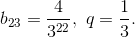
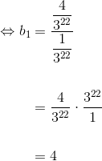
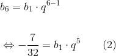
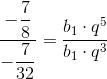
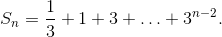
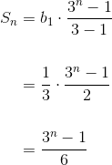

Exerciții rezolvate cu progresii geometrice
În această pagină, profesorii noștri de matematică ți-au pregătit câteva exerciții rezolvate complet. Aceste exerciții se rezolvă folosind proprietățile progresiei geometrice prezentate anterior.
-
Fie progresia geometrică
 , de raţie
, de raţie 
-
Se cunosc . Să se calculeze
-
Se dau  Să se afle
-
Avem că Să se afle primul termen și rația
-
Soluție:
- Folosind formula termenului general a Propoziției P9, avem:
- Din Propoziția P9, obținem că:


- Analog subpunctelor anterioare, avem că:

Împărţim a doua relaţie la prima şi obţinem:

Atunci:

- Fie progreseia geometrică , de raţie
- Știind că și să se calculeze și
- Cunoscând și să se afle și
Soluție:
- Folosind Propoziția P9 și Propoziția P12, avem:
- Analog subpunctului anterior, avem:
-
Să se calculeze sumele următoare:
-
-

-
Soluție:
- Observăm că primul termen este , iar al doilea este de unde ne rezultă că:
Atunci:
- Observăm că primul termen este şi al doilea de unde avem că:

- Fie o progresie geometrică. Să se calculeze:
- dacă și
 dacă și
dacă și
Soluție:
- Din Propoziția P9, obținem:

- Conform Propoziției P9, avem:
Atunci:
-
Să se determine progresia geometrică
 dacă şi
dacă şi
Soluţie:
Folosim formula termenului general, dată de Propoziția P9 :
Adunăm cele două relaţii și obţinem:
Atunci:
Ne rezultă astfel progresia geometrică cu termenii: